Back to Main
Templates & Artifacts

Templates & Artifacts
Ready-to-use templates for every QE and SDET. Copy, adapt, deliver.
14
Templates
4
Categories
Copy & Go
All
Test Documentation
Daily QE Work
Automation
Process & Governance
Expand All
Copied to clipboard!